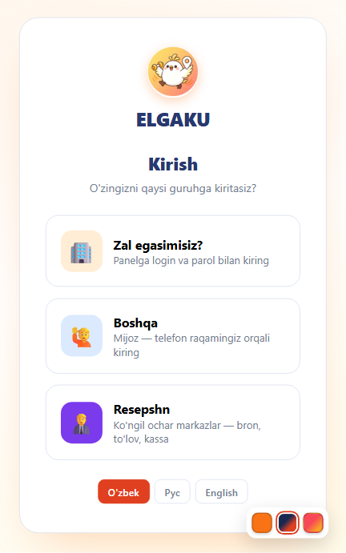
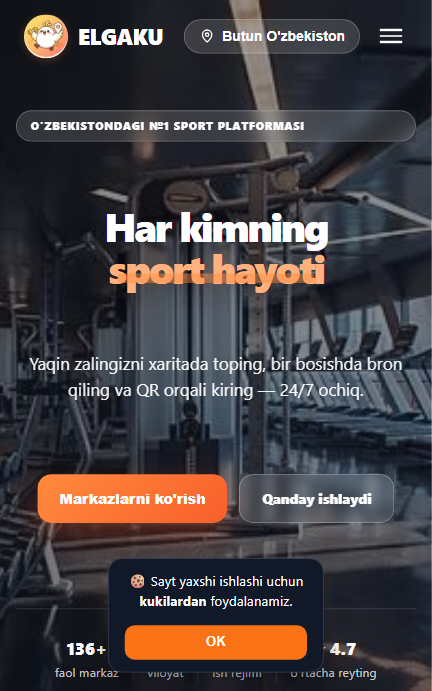
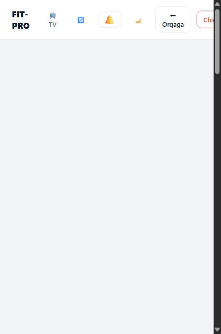
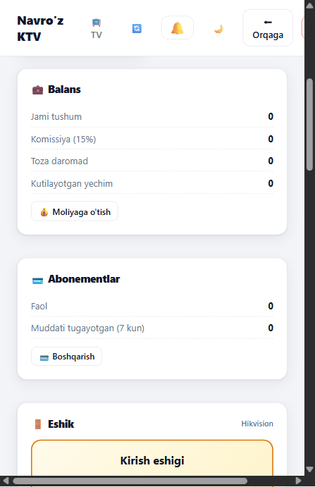
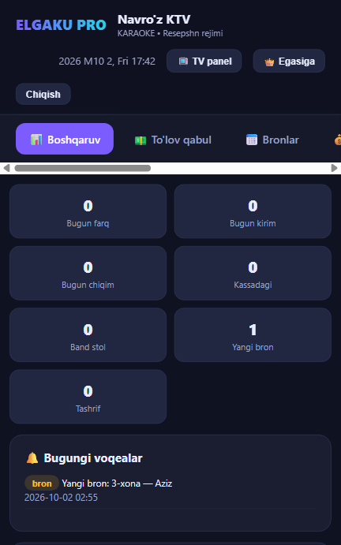
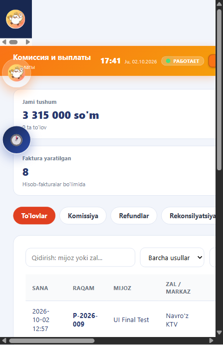
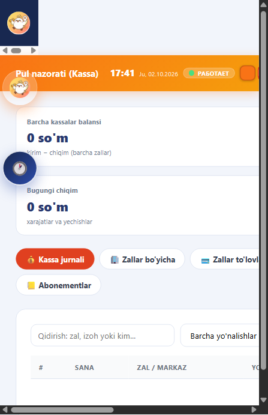
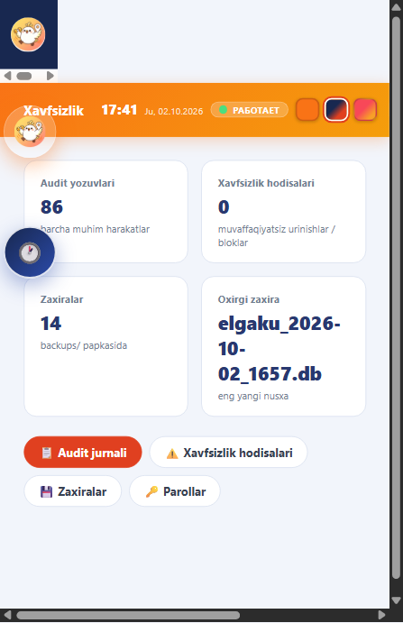
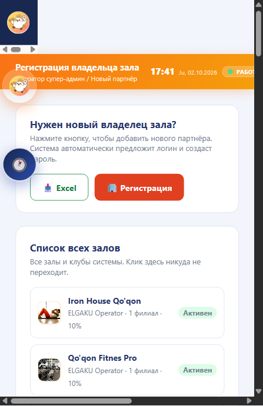
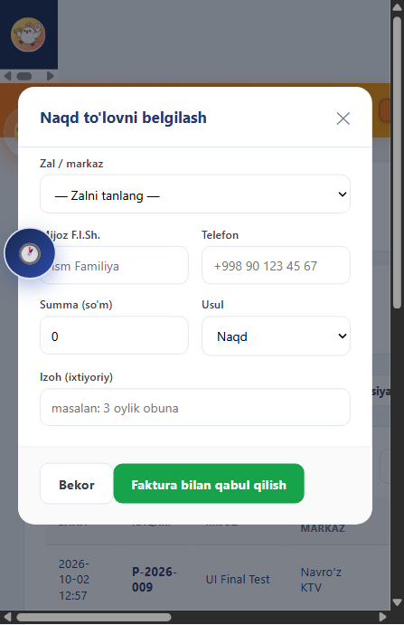

Yaratilgan funksiyalar — qo'llanma va ishlash tushuntirishi
Zal egalari, ko'ngil ochar markazlar, operator va resepshn uchun yagona boshqaruv tizimi: kassa nazorati, komissiya, xavfsizlik va zaxiralash to'liq avtomatlashtirilgan.
Versiya: 2.6Server: Python + SQLite (WAL)Port: 8000Til: O'zbek / Рус / EN
1
Kirish tizimi
login.html
Tizimga kim kirishini aniqlash uchun 3 alohida kirish yo'li yaratilgan. Parollar hech qachon brauzerda saqlanmaydi — hammasi serverda tekshiriladi.
Zal egasimisiz? — login va parol bilan panelga kirish (owner.html).
Boshqa (Mijoz) — telefon raqami orqali mijoz sifatida kirish.
Resepshn — ko'ngil ochar markazlar uchun bron, to'lov va kassa paneli (reception.html).
Xavfsizlik: login so'rovlari /api/auth/super/check va /api/auth/employee/check orqali serverda tekshiriladi; operator seansida parol umuman saqlanmaydi. Ilgari captcha ishlamayotgan edi — u tuzatildi va yangi seans tekshiruvi qo'shildi.

1-rasm. Kirish sahifasi — uch yo'nalish: zal egasi, mijoz, resepshn2
Bosh sahifa
index.html
Platforma uchun tashqi ko'rinish sahifasi: tizimda ro'yxatdan o'tgan zallar va markazlar, statistika (faol markazlar, reyting) ko'rsatiladi. Kirish bo'limiga Resepshn va Zal egasi paneli tugmalari qo'shildi — foydalanuvchi rolini tanlab kerakli panelga o'tadi.

2-rasm. Bosh sahifa — platforma taqdimoti va kirish yo'llari3
Zal egasi paneli
owner.html
Zal egasi uchun shaxsiy panel — o'z zali/markazini to'liq boshqaradi. Panel boshidan oxirigacha qayta ishlab chiqilgan va quyidagi funksiyalar qo'shilgan:
TV panel va resepshn rejimi — ko'ngil ochar markazlar uchun.

3-rasm. Zal egasi paneli — asosiy ko'rinish

4-rasm. Balans, abonementlar va eshik bloki
4
Resepshn paneli (ko'ngil ochar markazlar)
reception.html
User talabiga ko'ra: agar zal bo'lsa — resepshn kerak emas, lekin ko'ngil ochar markazlar uchun resepshn paneli yaratildi (KTV, bilyard va boshqalar uchun). Panel real vaqt rejimida ishlaydi:
Boshqaruv: bron qabul qilish, xonalar/stollar bandligi.
To'lov qabul: mijozdan pul qabul qilish — darhol kassaga (cashbox) kirim sifatida yoziladi, to'lov holati «TO'LANDI» bo'ladi.
Kassa ko'rsatkichlari: bugungi kirim, chiqim, kassadagi qoldiq, farq.
Voqealar jurnali: bugungi bronlar va o'zgarishlar (masalan «Yangi bron: 3-xona — Aziz»).
TV panel rejimi: zal ekranida navbat/afisha ko'rsatish.
Parol o'zgartirish — resepshn xodimi uchun.

5-rasm. Resepshn paneli — karaoke markaz misolida5
Operator paneli
operator.html
Operator (super-admin) butun tizimni boshqaradi. Panelda bir nechta katta bo'lim mavjud: Komissiya va to'lovlar (buxgalteriya), Pul nazorati (Kassa) (operativ pul), Xavfsizlik (audit, zaxira, parollar).
5.1 Komissiya va to'lovlar — buxgalteriya qavati
To'lovlar: barcha to'lovlar ro'yxati, qidiruv, holatlar.
Komissiya: har bir zal uchun ELGAKU komissiya foizi va hisoblar.
Faktura: E-SF formatidagi hisob-faktura avtomatik raqamlanadi (P-2026-XXX), QQS 12% hisoblanadi.
Refundlar: qaytarilgan to'lovlarni qayd etish.
Rekonsilyatsiya: bank bilan hisob-kitobni solishtirish.
Sozlamalar: bank ma'lumotlari (STIR, MFO, maxsus hisobvaraq), QQS stavkasi.
Naqd to'lovni belgilash: mijozdan naqd qabul qilish — endilikda bu kassaga ham yoziladi (6-bo'limda batafsil).

6-rasm. Komissiya va to'lovlar — faktura, komissiya, refundlar, rekonsilyatsiya
5.2 Pul nazorati (Kassa) — operativ pul qavati
Bu bo'lim kassadagi haqiqiy pulni kuzatadi va 8 ta yorliqdan iborat:
Kassa jurnali: har bir kirim/chiqim yozuvi, yo'nalish bo'yicha filtr.
Yechishlar: egasiga pul chiqarish so'rovlari, operator tasdig'i.
Rekonsilyatsiya: zal bo'yicha kunlik hisob (bugun / jami / kassa).
Paketlar, Sharhlar, Abonementlar: tizim bo'ylab ko'rish va boshqarish.
Muhim: «Komissiya va to'lovlar» buxgalteriya qavati, «Pul nazorati» esa operativ kassa qavati — ular bir-birini to'ldiradi, dublikat emas. Endi ular bir-biriga bog'langan (6-bo'lim).

7-rasm. Pul nazorati (Kassa) — jami balans, kirim, chiqim, yechishlar
5.3 Xavfsizlik bo'limi
Audit jurnali: har bir muhim harakat qayd etiladi (kim, qachon, nima qildi).
Xavfsizlik hodisalari: muvaffaqiyatsiz kirish urinishlari va bloklar.
Zaxiralar (backups): bazaning nusxalari, oxirgi zaxira vaqti; yangi zaxira yaratish.
Parollar: zal parollarini tiklash va super parolni o'zgartirish.

8-rasm. Xavfsizlik — audit, hodisalar, zaxiralar, parollar
5.4 Operator dashboard
Umumiy ko'rinish: yangi egasini ro'yxatdan o'tkazish (Excel yuklash, avtomatik login yaratish), barcha zallar ro'yxati va ularning holati, komissiya foizi.

9-rasm. Operator dashboard — zallar ro'yxati va egasini ro'yxatga olish6
Naqd to'lov — kassa sinxronizatsiyasi
Bu eng muhim yangi funksiya. Ilgari operator «Komissiya va to'lovlar» bo'limida naqd to'lovni belgilaganda, u faqat lokal ro'yxatga yozilar edi va kassaga tushmasdi — pul nazorati bilan mos kelmasdi. Endi bitta tugma bilan hamma joyga yoziladi:
Faktura raqami avtomatik (P-2026-XXX)Hisob-faktura
→
Server: POST /api/operator/cash-payhall_payments + cashbox kirim
→
Audit jurnali + Telegram xabarkuzatuv
Natijada: to'lov bir vaqtning o'zida faktura ro'yxatida, kassa jurnalida (kirim) va zallar to'lovlarida («TO'LANDI») ko'rinadi. Operator interfeysda «To'lov kassaga ham qayd etildi» xabari chiqadi.

10-rasm. Naqd to'lovni belgilash oynasi — faktura bilan qabul qilish
Tizim bo'ylab xavfsizlik uchun barcha tashkiliy ishlar bajarildi:
Mexanizm
Vazifasi
audit_log jadvali + audit()
Har bir muhim harakat (kirish, to'lov, parol, yechish) kim tomonidan va qachon qilinganini qayd qiladi.
backup_db()
Baza nusxasi backups/ papkasiga avtomatik va qo'lda yaratiladi (14 nusxagacha saqlanadi).
Parol serverda tekshiriladi
Super/employee parollari brauzerga yuborilmaydi; /api/auth/super endi parol qaytarmaydi.
API himoyasi
Zallar, xodimlar, kassa, audit — faqat operator (X-Elgaku-Login) huquqi bilan; oddiy zal egasi 403 oladi.
Parol siyosati
Yangi parol kamida 6 belgi; eski parol tasdiqlanishi shart.
Telegram ogohlantirish
Muhim operatsiyalar (to'lov, yechish) Telegram orqali xabar qilinadi.
8
Barqarorlik va texnik tuzatishlar
Sinov davomida topilgan muammolar va ularning yechimlari:
Muammo
Yechim
«database is locked» — sahifalar ochilmay qolardi (ERR_EMPTY_RESPONSE)
SQLite ulanishiga timeout=20 va busy_timeout=15000 qo'shildi; tashrif statistikasi xatosi sahifani buzmaydi; chat tozalash daqiqada 1 marta cheklandi va indeks qo'shildi.
Kassa va komissiya bir-biridan ajralgan edi
/api/operator/cash-pay sinxronizatsiyasi — endi bitta to'lov hamma joyda ko'rinadi.
Test yozuvlari kassada qolgan
Tozalandi; bazaning zaxira nusxalari saqlanadi (elgaku_*.db).
Captcha ishlamasdi
Yangilangan autentifikatsiya oqimi bilan tuzatildi.
Ishga tushirish:start_server.bat yoki python server.py — server 8000-portda ishlaydi. Sahifalar: http://localhost:8000/index.html, login.html, operator.html, owner.html, reception.html.